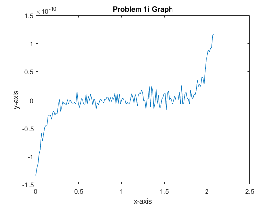
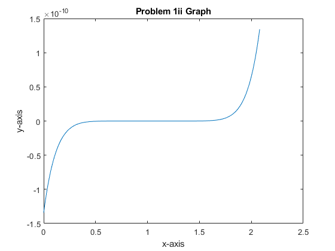

Contents
%%APPM 4600 Homework 1 clc clear close all % 1: i)Need to plot p(x)for several x values % ii) Plot p(x) using a different form % iii) find the discrepancy in the two graphs
Problem 1i
Creating X variable
x = 1.920:0.001: 2.080 ; % Creating P(X) p1 = x.^9 - 18.*x.^8 +144.*x.^7 - 672.*x.^6 +2016.*x.^5 - 4032.*x.^4 +5376.*x.^3 - 4608.*x.^2 +2304.*x - 512; % Dummy Variable to plot against x1 = linspace(0,max(x),length(x)); % Plotting the results figure plot(x1,p1) title('Problem 1i Graph') xlabel('x-axis') ylabel('y-axis')
Problem 1ii
% Creating P(x) for problem 1ii p2 = (x-2).^9; figure plot(x1,p2) title('Problem 1ii Graph') xlabel('x-axis') ylabel('y-axis')
Problem 1iii
% The discrepancy is that (x-2)^9 is smooth while the other form is very % rough %The reason is because several values are being lost as they are too small %for the computer %The (x-2)^9 form is correct % find absolute error!!!!!!!!!!!
Problem 2i
x = 2*10^-100; z = sqrt(x+1) y = ((z-1 * -z))/(-z)
z =
1
y =
-2
Problem 2ii
%sin(x) - sin(y) = 2sin((x-y)/2)cos((x+y)/2) % Use trig identities to avoid the cancellation of sines %Create dummy variables that are approximately equal x = 100; y= x - 10^-50; u = (x-y)/2; v = (x+y)/2; twoi = 2*sin(u)*cos(v) % multipy by sin(u) and use the identity sin^2(u) = 1 - cos^2(u) twoi2 = 2*(1-(cos(u))^2)*cos(v)
twoi =
0
twoi2 =
0